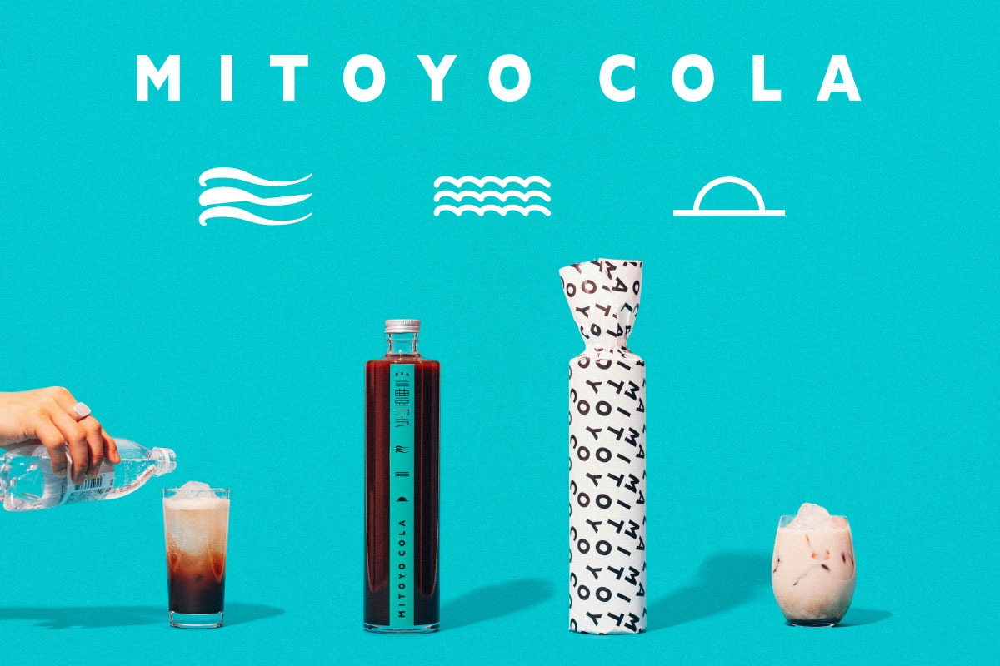
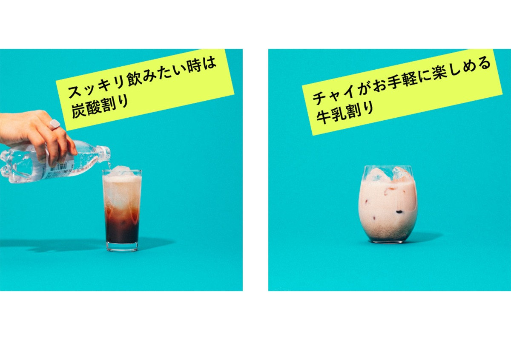
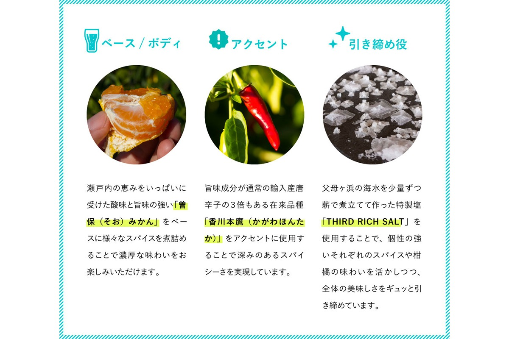
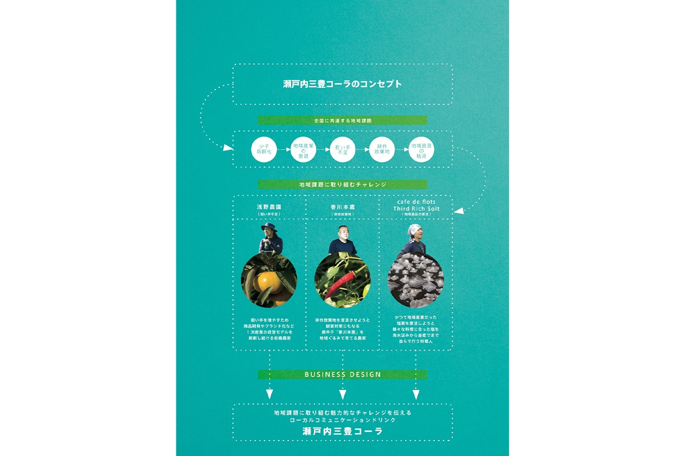
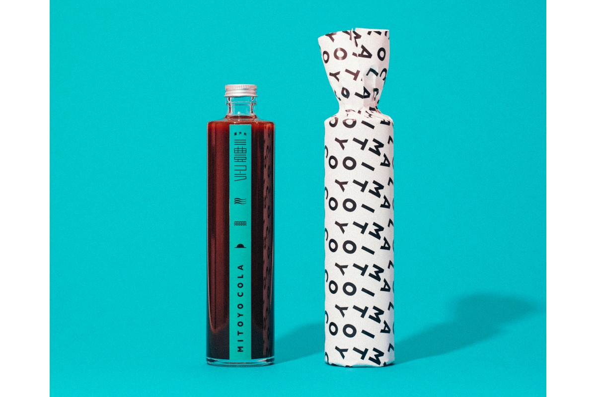

Префектура Кагава · Митоё · крафтовые напитки
«Сэтоути Митоё кола»: крафтовая кола, которая рассказывает о регионе

Крафтовая кола из Митоё варится на мандаринах соо, местном остром перце и соли из морской воды Титибугахамы. Компания Сэтоути удон кампани выпускает её как «колу для разговора о регионе».
Что такое крафтовая кола
Кола из семян колы
Кола в самом начале пути была лекарством: из семян колы, дерева из Южной Африки и Бразилии, извлекали жидкость и пили её для укрепления здоровья. Сегодня крафтовые колы варят по собственным рецептам со специями и в других странах, и в Японии тоже. «Сэтоути Митоё кола» задумана так: хочется, чтобы через вкус люди с интересом узнавали производителей региона и их продукты.
Рецептов подачи много. Для свежести колу разводят газированной водой, для тепла и мягкости молоком, а вечером её смешивают с ромом или виски и газировкой.

Три особенности
Мандарины, перец и соль
«Сэтоути Митоё кола» это пряная местная кола, в которую упакованы дары Сэтоути. Три акцента дают ей характер:

- Мандарины соо: местный сорт с яркой кислинкой и умами;
- Перец Кагава хонтака: острый перец с утроенным (по сравнению с импортным) содержанием вкусовых веществ;
- Специальная соль THIRD RICH SALT: морскую воду из Титибугахамы выпаривают на дровах небольшими порциями.
Получается кола с глубоким умами и пряной остротой, которая потихоньку тянется изнутри.
Зачем эта кола
Кола как разговор о регионе
За колой стоит желание не только сделать вкусный напиток, но и рассказать о задачах региона и о людях, которые с ними справляются. Интерес горожан к жизни на периферии растёт, и обычно он останавливается на пейзажах и природе. Но за красивым фасадом в глубинке живут давние сложные проблемы: старение населения, уход молодых в города. Если рассказывать о людях, которые берутся за эти задачи с творческой энергией, то и консервативные сообщества начнут смелее браться за новое.

Так и родилась «кола для разговора о регионе»: она передаёт истории, которые не найти в интернете и не увидеть в поездке.

«Сэтоути Митоё кола»
- Цена
- 2 950 иен (с налогом)
- Объём
- 500 мл, стеклянная бутылка
- Где купить
- интернет-магазин, розничные магазины, рестораны и магазины селективных товаров
- Сайт
- mitoyocola.com